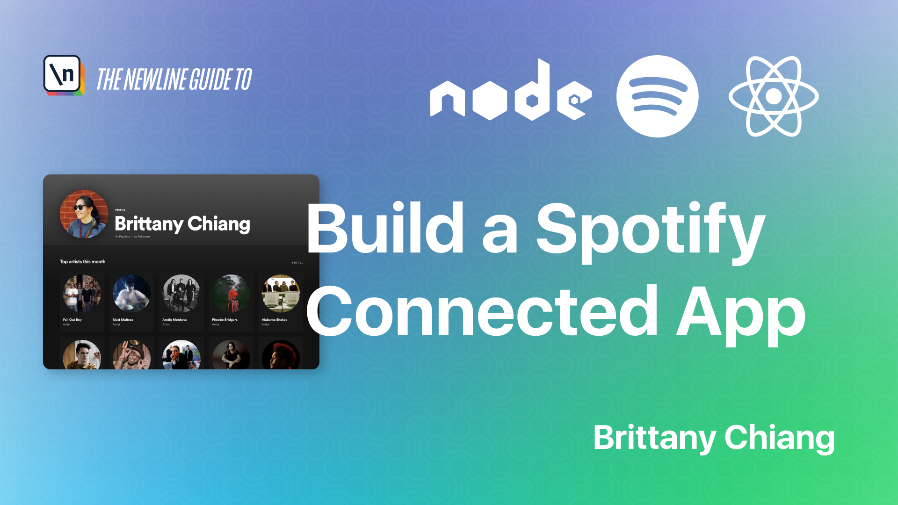
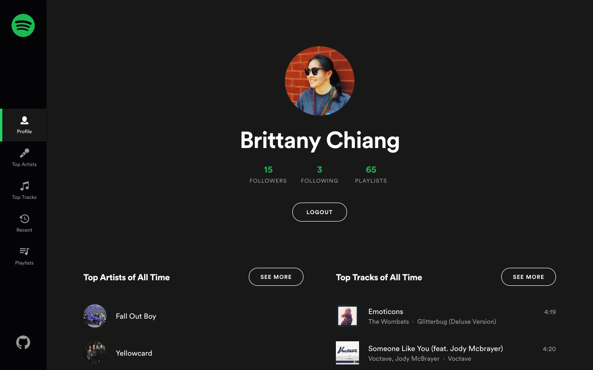
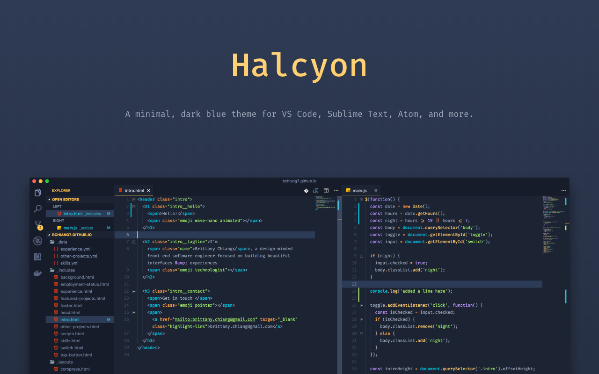
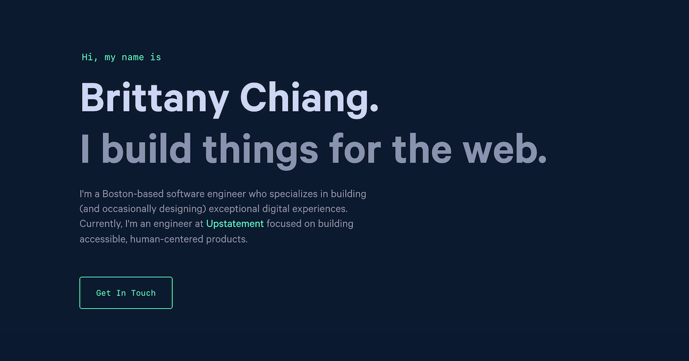

About
Hi there! I'm Brittany, and I like building things. I'm a frontend engineer with expertise in crafting accessible, pixel-perfect user interfaces. I take pride in creating thoughtful, inclusive products and have a sharp eye for the little details that separate a good product from an exceptional one. I enjoy working most at the intersection of design and engineering, where great user experience meets clean, scalable code.
Currently, I'm a Senior Frontend Engineer at Klaviyo, where I work on our design system and help build new products, like Composer. I lead engineering efforts across our component library and frontend platform, partnering closely with designers and engineers to ensure accessibility is built into the foundation of everything we ship.
In my spare time, you can usually find me climbing, playing tennis, hanging out with my wife and two cats, or running around Hyrule searching for Korok seeds.
Experience
2024 — Present Build and maintain critical components used to construct Klaviyo’s frontend, across the whole product. Work closely with cross-functional teams, including developers, designers, and product managers, to implement and advocate for best practices in web accessibility.
- JavaScript
- TypeScript
- React
- Storybook
2018 — 2024 Build, style, and ship high-quality websites, design systems, mobile apps, and digital experiences for a diverse array of projects for clients including Harvard Business School, Everytown for Gun Safety, Pratt Institute, Koala Health, Vanderbilt University, The 19th News, and more. Provide leadership within engineering department through close collaboration, knowledge shares, and spearheading the development of internal tools.
- JavaScript
- TypeScript
- HTML & SCSS
- React
- Next.js
- React Native
- WordPress
- Contentful
- Node.js
- PHP
July — Dec 2017 Developed and styled interactive web apps for Apple Music, including the user interface of Apple Music’s embeddable web player widget for in-browser user authorization and full song playback.
- Ember
- SCSS
- JavaScript
- MusicKit.js
2016 — 2017 Collaborated with other student designers and engineers on pro-bono projects to create new brands, design systems, and websites for organizations in the community.
- Jekyll
- SCSS
- JavaScript
- WordPress
July — Dec 2016 Worked with the UI team to engineer and improve major features of Starry’s customer-facing Android app.
- Cordova
- Backbone
- JavaScript
- CSS
July — Dec 2015 Developed, maintained, and shipped production code for client websites. Clients included JetBlue, Lovesac, U.S. Cellular, U.S. Department of Defense, and more.
- HTML
- CSS
- JavaScript
- jQuery
Projects
Build a Spotify Connected App
Video course that teaches how to build a web app with the Spotify Web API. Topics covered include the principles of REST APIs, user auth flows, Node, Express, React, Styled Components, and more.

Spotify Profile
Web app for visualizing personalized Spotify data. View your top artists, top tracks, recently played tracks, and detailed audio information about each track. Create and save new playlists of recommended tracks based on your existing playlists and more.
719- React
- Express
- Spotify API
- Heroku

Halcyon Theme
Minimal dark blue theme for VS Code, Sublime Text, Atom, iTerm, and more.
100k+ Installs
brittanychiang.com (v4)
An old portfolio site built with Gatsby with 6k+ stars and 3k+ forks
8,291- Gatsby
- Styled Components
- Netlify
